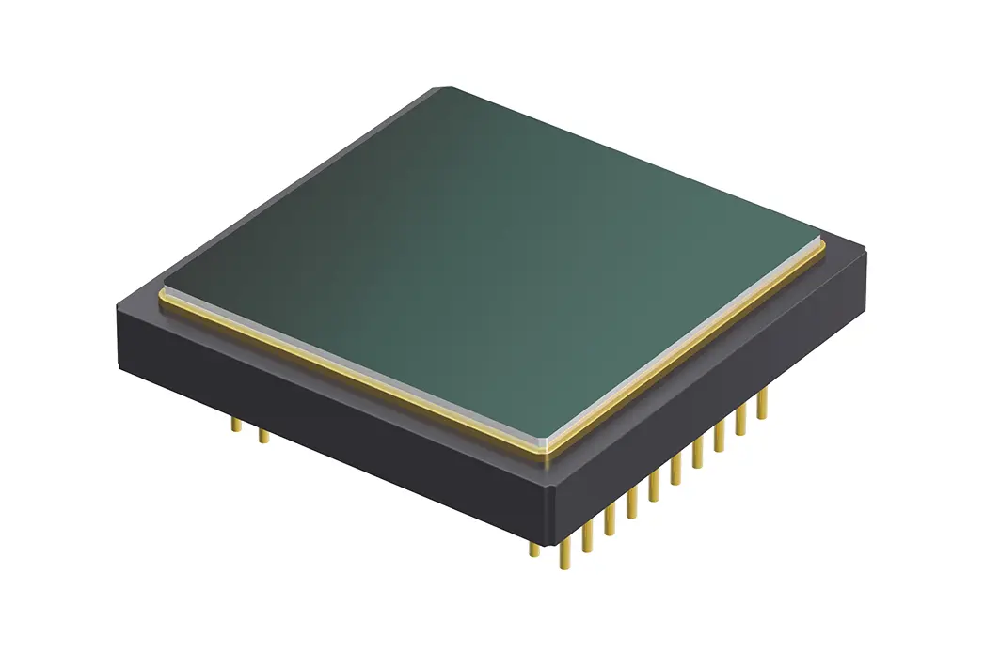

You must have a great idea
Our products can help you solve problems quickly and accurately
Let us help you
Contact Us >
You must have a great idea
Our products can help you solve problems quickly and accurately
Let us help you
Contact Us >
 You must have a great idea
Our products can help you solve problems quickly and accurately
Let us help you
Contact Us >
You must have a great idea
Our products can help you solve problems quickly and accurately
Let us help you
Contact Us >
You must have a great idea
Our products can help you solve problems quickly and accurately
Let us help you
Contact Us >
❮
❯
Products
Focusing on technological exploration of infrared modules
See More >

Infrared detectors
- WLO+WLP enables a lower-cost integration solution
- Weightas light as 3g, power consumption as low as 9mW
- Simple Development, Fast Integration
- Universal DVP data output interface
- Multiple Optical Lenses,Covering wide-angle/telephoto/ultra-telephoto lenses and various focusing modes

Infrared module
- The wafer level optical lens, wafer level packaged detector,
and micro electromagnetic valve shutter can accurately
obtain temperature data and heat distribution of the target area or point
- Ultra miniature body structure, ultra-low cost expenditure,
can be easily integrated into various mobile terminals or
smart devices with strict requirements for cost, size, and weight
- WLO+WLP achieves a lower cost integration solution,
with a weight of up to 1.3g and a power consumption as low as 9mW
- Covering different lenses such as wide-angle, telephoto, and ultra telephoto, with multiple focusing methods
- Simple development and fast integration,Universal DVP data output interface

Infrared movement
- WLP detector+dedicated ASIC image processing, lower integration cost
- The bare chip is as light as 9.1g and the power consumption is as low as 0.7W
- High sensitivity, typical NETD:<40mK
- New generation image algorithm overlay processing such as NUC/3DNR/DNS/DRC/EE
- USB2.0/DVP/LVDS multi-mode image output interface, RAW/YUV image data output, serial port control
❰
❱